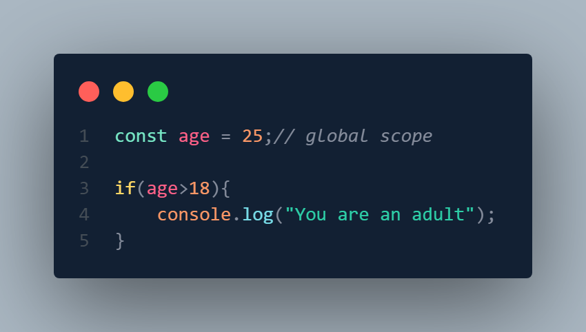
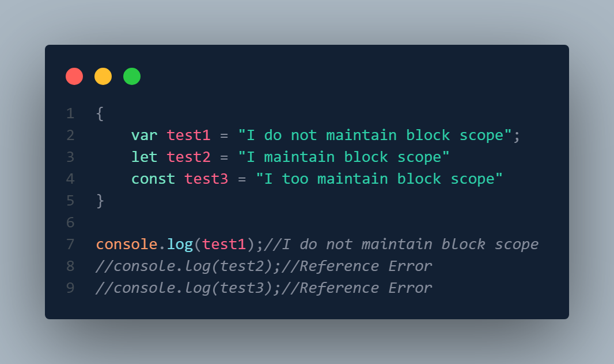
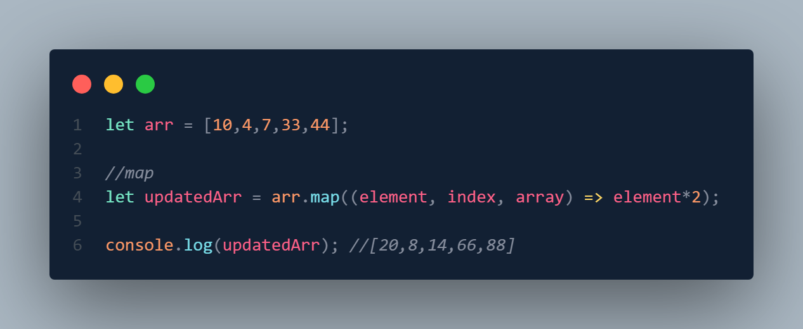
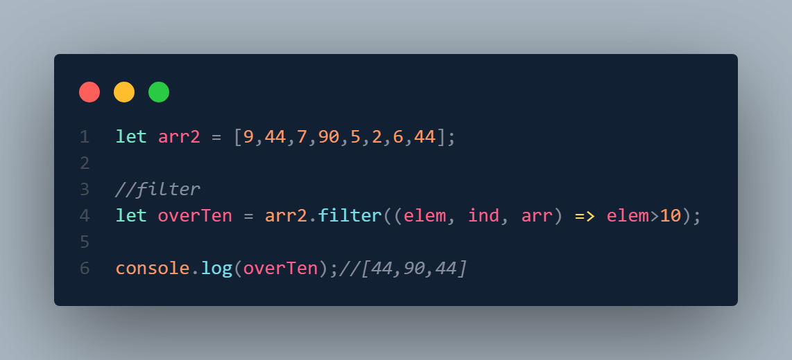
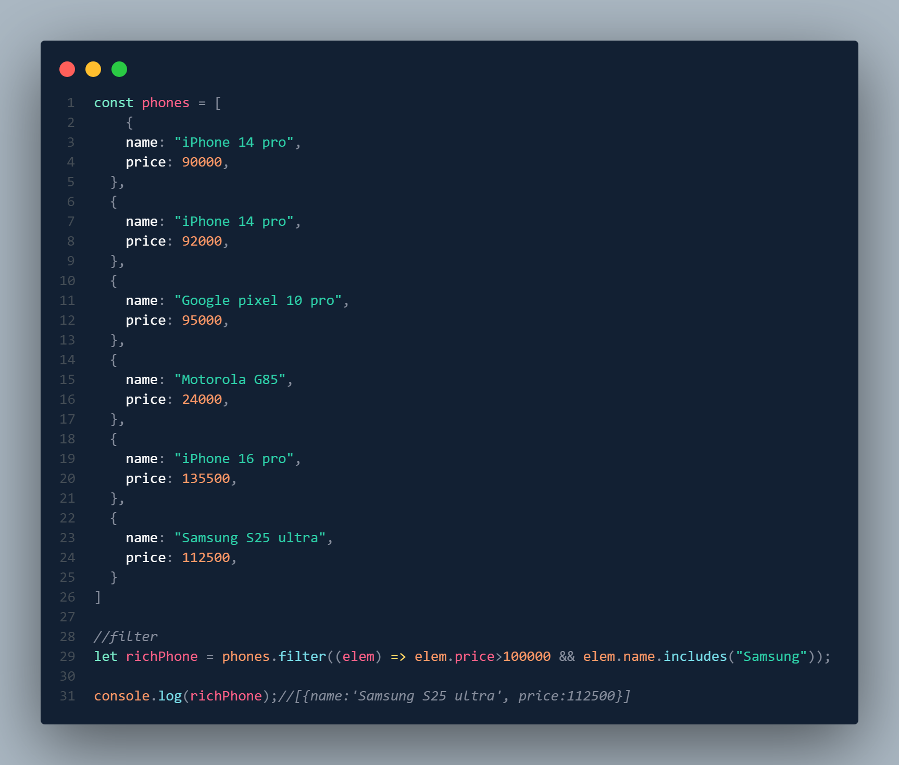
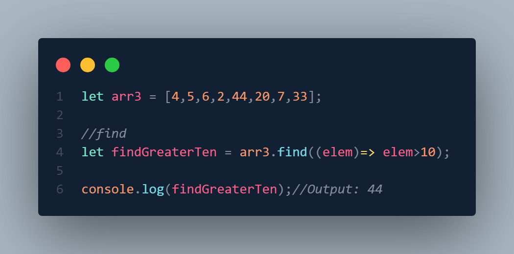
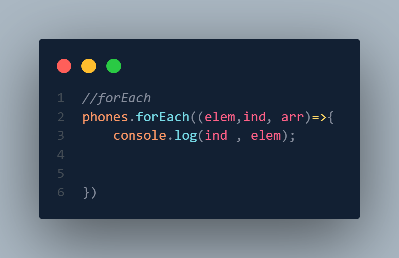
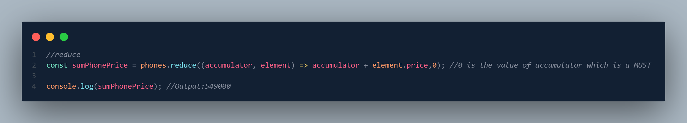
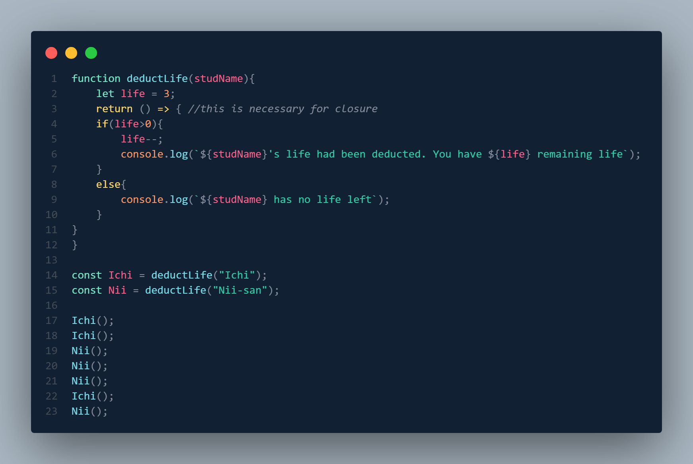
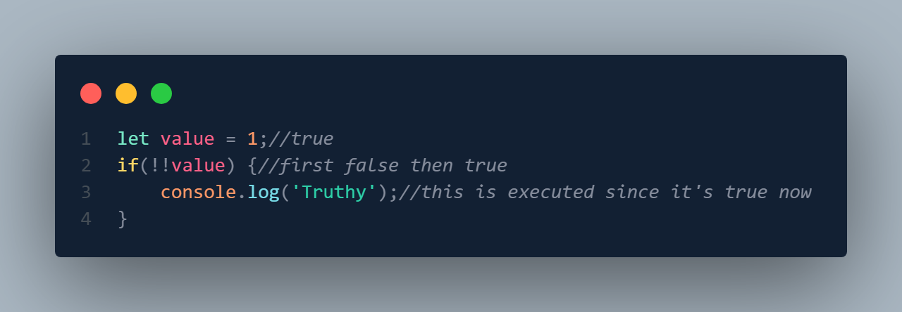

✔️Hoisting
Hoisting is a JavaScript behavior in which variable and function declarations are moved ("hoisted") to the top of their containing scope before the code is executed.
var is hoisted, but only the declaration, not the value that is assigned.

let and const also hoisted, but not initialized. They are in a "Temporal Dead Zone" from the start of the block until the declaration line

✔️Scope
Scope accessibility (visibility) of variables, functions, and objects in a particular part of the program.
Scope is 3 types---
1. Global scope
2. Block scope
3. Function scope or local scope
✅Global Scope:

✅Block Scope: var does not maintain block scope. But let and const maintain block scope.

✅Function or Local Scope: var,let and const all maintain the function or local scope.

✔️Array Operations (map, filter, find , forEach, reduce)
✅map: map is used to update/modify element of an array.

✅filter:*** filter is used to filter multiple elements of an array based on certain conditions.

For Array Object---

✅find: find is used to find a single element of an array based on certain conditions. If multiple elements meet the condition then only the 1st element which met the condition is consoled.

✅forEach: forEach is just a loop iteration.

The Output---

✅reduce(optional):

✔️Closure
Closure is when a function is able to remember and access its lexical scope even when that function is executing outside its lexical scope.

Output:
Ichi's life had been deducted. You have 2 remaining life
Ichi's life had been deducted. You have 1 remaining life
Nii-san's life had been deducted. You have 2 remaining life
Nii-san's life had been deducted. You have 1 remaining life
Nii-san's life had been deducted. You have 0 remaining life
Ichi's life had been deducted. You have 0 remaining life
Nii-san has no life left
✔️Pass by Value
Pass by value refers to passing primitive values(number, string, boolean, null, undefined etc)

Here, the value is 'different' inside the function and outside it. It is because here a string value is passed.
✔️Pass by Reference
Pass by reference refers to passing non-primitive values(function, object etc)

Here, the value is SAME inside the function and outside it. It is because here a reference of the function is passed and not the value. So, the referenced object changes along with the referencing function.
✔️Truthy and Falsy Value
Falsy values are: false , 0 , "" , null , undefined , NaN.
Truthy values are any other values except the falsy values.
✔️Double not(!!)
Double not(!!) is used in such case where we take value(num,string etc), and we use !(not) to make that value false. And now we want that value to be true and that's when we use another not.

undefined vs Null
callback function